1 Dicas do ggplot
Nesta página, iremos abordar dicas e truques para criar gráficos inteligentes e bonitos com o ggplot. Para aprender os fundamentos do ggplot, veja a página sobre [básico do ggplot].
Existem diversos tutoriais sobre o ggplot2 disponíveis na seção de Recursos ao final deste capítulo. Você também pode baixar essa colinha sobre visualização de dados com o ggplot do site do RStudio. Nós recomendamos fortemente que você busque inspiração de gráficos na galeria de gráficos do R e no Data-to-viz.
1.1 Preparando o ambiente R
Carregue os pacotes
O código abaixo realiza o carregamento dos pacotes necessários para a análise dos dados. Neste manual, enfatizamos o uso da função p_load(), do pacman, que instala os pacotes, caso não estejam instalados, e os carrega no R para utilização. Também é possível carregar os pacotes instalados utilizando a função library(), do R base. Para mais informações sobre pacotes do R, veja a página [Básico do R].
pacman::p_load(
tidyverse, # inclue ggplot2 e outros pacotes
rio, # importar/exportar
here, # localizador de arquivos
stringr, # trabalhando com caracteres
scales, # transforme números
ggrepel, # etiquetas colocadas de forma inteligente
gghighlight, # destaque uma parte do gráfico
RColorBrewer # escalas de cores
)Importe os dados
Nesta página, nós importamos um conjunto de dados de casos de uma simulação de epidemia de Ebola. Se você quiser acompanhar, clique para baixar a linelist “limpa” (as .rds file). Importe os dados com a função import(), do pacote rio (ela trabalha com uma variedade de tipos de arquivos, como .xlsx, .csv, .rds - veja a página [Importar e exportar] para detalhes).
linelist <- rio::import("linelist_cleaned.rds")As primeiras 50 linhas da linelist são mostradas abaixo.
1.2 Escalas para as cores, preenchimentos, eixos, etc.
No ggplot2, quando a aparência dos dados no gráfico (ex.: tamanho, cor, formato, preenchimento, eixo do gráfico) é mapeada para colunas nos dados, a visualização exata pode ser ajustada com o comando de “escala” correspondente. Nesta seção, nós explicamos alguns ajustes comuns de escalas.
1.2.1 Esquemas de cores
Uma coisa que pode ser inicialmente difícil de entender com o ggplot2, é o controle dos esquemas de cores. Observe que esta seção discute a cor dos objetos no gráfico (geometrias/formatos), como pontos, barras, linhas, bases, etc. Para ajustar a cor de textos adicionais, títulos, ou plano de fundo, veja a seção Temas da página sobre [Básico do ggplot].
Para controlar a “cor” dos objetos no gráfico, você irá ajustar o argumento color = (a cor exterior do item) ou o fill = (a cor interior do item). Uma exceção a esse padrão é o geom_point(), em que você realmente só consegue ajustar color =, que ajusta a cor do ponto inteiro (interior e exterior).
Ao ajustar a cor ou preenchimento (fill), você pode utilizar o nome das cores reconhecidas pelo R, como "red" (vermelho) (veja a lista completa ou digite ?colors), ou um código hexadecimal específico para uma cor, como "#ff0505".
# histograma -
ggplot(data = linelist, mapping = aes(x = age))+ # ajuste os dados e eixos
geom_histogram( # mostre o histograma
binwidth = 7, # largura dos containers
color = "red", # cor da linha dos containers
fill = "lightblue") # cor interior dos containers (preenchimento)Como explicado na seção mapeando os dados para o gráfico, da página [Básico do ggplot], aspectos estéticos como fill = e color = podem ser definidos fora do comando mapping = aes(), ou dentro dele. Se fora de aes(), o valor atribuído deve ser estático (ex.: color = "blue") e irá ser aplicado para todos os dados colocados no gráfico pelo geom. Se dentro, a aparência estética deve ser mapeada para uma variável, como color = hospital, e a expressão irá variar de acordo com o valor desta linha nos dados. Alguns exemplos:
# Cor estática para pontos e para a linha
ggplot(data = linelist, mapping = aes(x = age, y = wt_kg))+
geom_point(color = "purple")+
geom_vline(xintercept = 50, color = "orange")+
labs(title = "Cor estática para os pontos e linha")
# Cor mapeada para uma coluna contínua
ggplot(data = linelist, mapping = aes(x = age, y = wt_kg))+
geom_point(mapping = aes(color = temp))+
labs(title = "Cor mapeada para uma coluna contínua")
# Cor mapeada para uma coluna discreta
ggplot(data = linelist, mapping = aes(x = age, y = wt_kg))+
geom_point(mapping = aes(color = gender))+
labs(title = "Cor mapeada para uma coluna discreta")
# gráfico de barras, preenchimento com uma coluna discreta, cor para um valor estático
ggplot(data = linelist, mapping = aes(x = hospital))+
geom_bar(mapping = aes(fill = gender), color = "yellow")+
labs(title = "Preenchimento mapeado para uma coluna discreta, cor estática")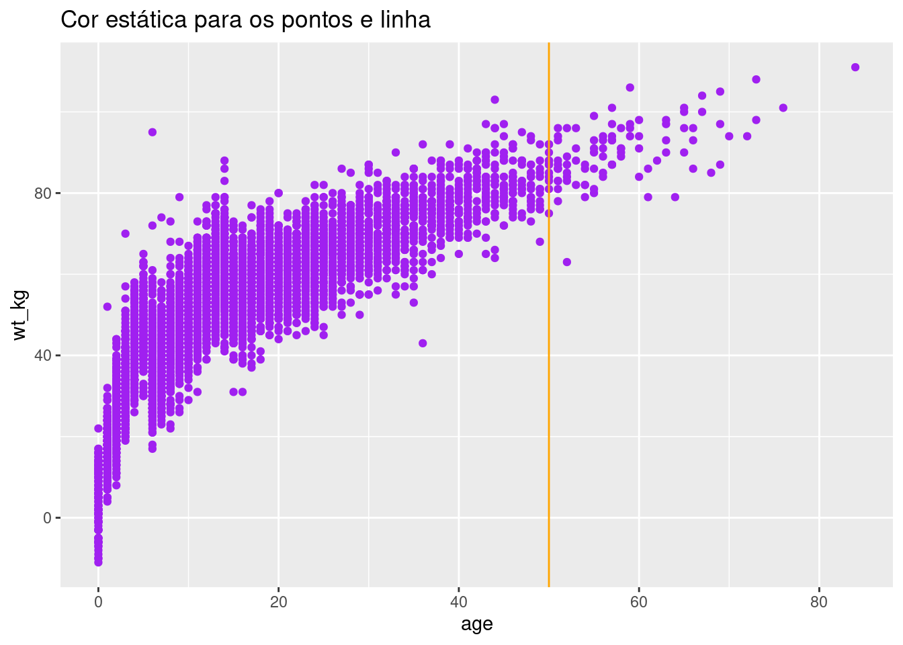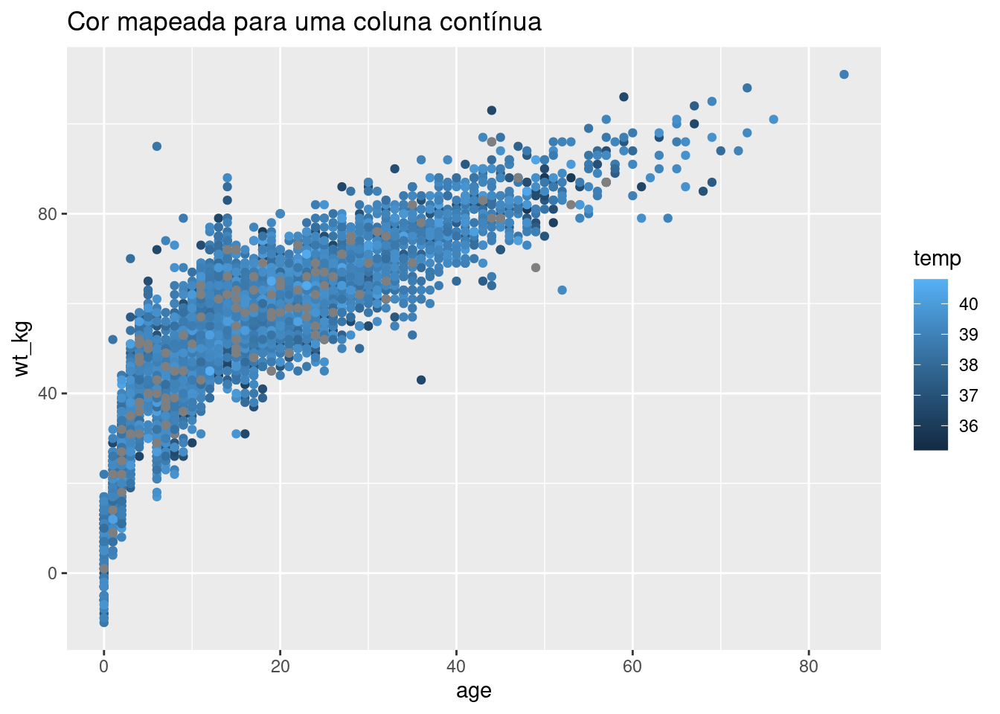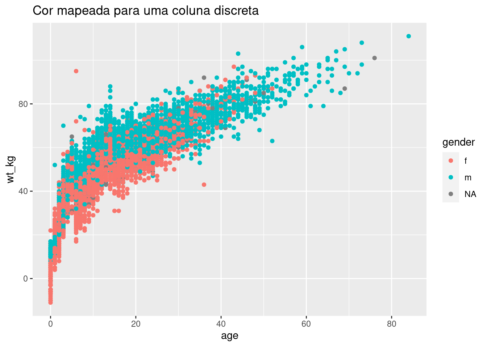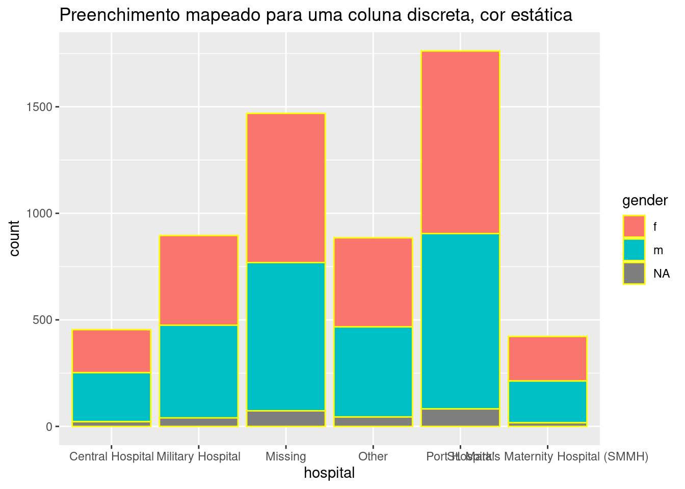
Escalas
Quando você mapear uma coluna para uma aparência estética do gráfico (ex.: x =, y =, fill =, color =…), seu gráfico irá ganhar uma escala/legenda. Veja acima como a escala pode ter valores contínuos, discretos, datas, etc. dependendo na classe da coluna atribuída. Se você tiver múltiplas estéticas mapeadas para as colunas, seu gráfico terá múltiplas escalas.
Você pode controlar as escalas com a função scales_() apropriada. As funções de escala do ggplot() têm 3 partes, que são escritas assim: scale_AESTHETIC_METHOD().
- A primeira parte,
scale_(), é fixa. - A segunda parte, o AESTHETIC, deve ser a estética que você quer ajustar a escala para (
_fill_,_shape_,_color_,_size_,_alpha_…) - as opções aqui também incluem_x_e_y_.
- A terceira parte, o METHOD, será ou
_discrete(),continuous(),_date(),_gradient(), ou_manual(), de acordo com a classe da coluna e como você quer controlar ela. Existem outras classes, mas estes são frequentemente os mais utilizados.
Certifique-se de utilizar a função correta para a escala! Do contrário, seu comando de escala não mudará nada no gráfico. Se você tiver múltiplas escalas, pode utilizar múltiplas funções de escala para ajusta-las! Por exemplo:
Argumentos de escala
Cada tipo de escala possui seus próprios argumentos, embora existam alguns em comum. Busque uma função no R, como ?scale_color_discrete, para ver a documentação dos argumentos dessa função.
Para escalas contínuas, utilize breaks = para fornecer uma sequência de valores com seq() (use to =, from =, e by = como mostrado no exemplo abaixo). Ajuste expand = c(0,0) para eliminar espaços extras ao redor dos eixos (isto pode ser utilizado em qualquer escala _x_ ou _y_).
Para escalas discretas, você pode ajustar a ordem de aparecimento dos fatores com breaks = e também ajustar os rótulos desses fatores com o argumento labels =. Forneça um vetor de caractere para cada um desses argumentos (veja exemplos abaixo). Você também pode excluir NA facilmente ao ajustar na.translate = FALSE.
As nuances de escalas de datas são abordados mais extensivamente na página [Curvas epidêmicas].
Ajustes manuais
Um dos truques mais úteis é utilizar funções que alteram as escalas de forma “manual”, de forma a explicitamente atribuir cores conforme você desejar. Estas são funções com a sintaxe scale_xxx_manual() (ex.: scale_colour_manual() ou scale_fill_manual()). Cada um dos argumentos a seguir são utilizados no exemplo abaixo.
- Atribua cores para os valores dos dados com o argumento
values =
- Especifique uma cor para
NAcomna.value =
- Mude como os valores são escritos na legenda com o argumento
labels =
- Mude o título da legenda com
name =
A seguir, nós criamos um gráfico de barras, mostramos como ele é por padrão, e, então, mostramos como fica após ajustarmos três escalas - a escala contínua do eixo y, a escala discreta do eixo x, e o ajuste manual do preenchimento (cor interior das barras).
# PADRÃO - sem ajuste de escalas
ggplot(data = linelist)+
geom_bar(mapping = aes(x = outcome, fill = gender))+
labs(title = "Padrão - sem ajuste de escalas")
# ESCALAS AJUSTADAS
ggplot(data = linelist)+
geom_bar(mapping = aes(x = outcome, fill = gender), color = "black")+
theme_minimal()+ # simplifique o fundo do gráfico
scale_y_continuous( # escala contínua para o eixo y (contagens)
expand = c(0,0), # sem espaços extras
breaks = seq(from = 0,
to = 3000,
by = 500))+
scale_x_discrete( # escala discreta para o eixo x (gênero)
expand = c(0,0), # sem espaços extras
drop = FALSE, # mostre todos os níveis de factor (mesmo que não estejam nos dados)
na.translate = FALSE, # remove desfechos clínicos desconhecidos (NA) do gráfico
labels = c("Died", "Recovered"))+ # Mude a visualização dos valores
scale_fill_manual( # Especifique manualmente o preenchimento (cor interior da barra)
values = c("m" = "violetred", # valores de referência nos dados para atribuir cores
"f" = "aquamarine"),
labels = c("m" = "Homem", # renomeie a legenda (use "=" para fazer atribuições e evitar erros)
"f" = "Mulher",
"Desconhecido"),
name = "Gênero", # título da legenda
na.value = "grey" # atribua uma cor para dados em branco
)+
labs(title = "Com as escalas ajustadas") # Ajuste o título da legenda do preenchimentoEscalas contínuas dos eixos
Quando os dados são mapeados para os eixos do gráfico, estes também podem ser ajustados com comandos de escala. Um exemplo simples é ajustar a visualização de um eixo (ex.: eixo y) que é mapeado para uma coluna com dados contínuos.
No caso de querermos ajustar as quebras ou visualização dos valores no gráfico, podemos utilizar o scale_y_continuous(), do ggplot. Como observado acima, utilize o argumento breaks = para fornecer uma sequência de valores que irão servir como “quebras” na escala. Estes são os intervalos em que os números serão mostrados. Para este argumento, você pode fornecer um vetor c() contendo os valores dos intervalos desejados, ou você pode fornecer uma sequência regular de números utilizando a função seq() do R base. Esta função aceita to =, from =, e by =.
# PADRÃO - sem ajuste da escala
ggplot(data = linelist)+
geom_bar(mapping = aes(x = outcome, fill = gender))+
labs(title = "Padrão - sem ajuste da escala")
#
ggplot(data = linelist)+
geom_bar(mapping = aes(x = outcome, fill = gender))+
scale_y_continuous(
breaks = seq(
from = 0,
to = 3000,
by = 100)
)+
labs(title = "Intervalo do eixo y ajustado")
Mostre as porcentagens
Caso os seus dados originais sejam proporções, você pode facilmente mostra-los como porcentagens com “%” ao adicionar labels = scales::percent nos seus comandos de escala, como mostrado abaixo.
Embora uma alternativa seria converter os valores para caracteres, e, então, adicionar o “%” como caracter no final, esta abordagem irá causar problemas uma vez que seus dados não serão mais variáveis numéricas contínuas.
# Proporções originais do eixo y
#############################
linelist %>% # inicie com a linelist
group_by(hospital) %>% # agrupe os dados por hospital
summarise( # crie uma coluna de resumo dos dados
n = n(), # total de casos (linhas) em um grupo
deaths = sum(outcome == "Death", na.rm=T), # número de mortes nos grupos
prop_death = deaths/n) %>% # proporção de mortes por grupo
ggplot( # inicie o gráfico
mapping = aes(
x = hospital,
y = prop_death))+
geom_col()+
theme_minimal()+
labs(title = "Mostre as proporções originais do eixo y")
# Mostre as proporções do eixo y como porcentagens
########################################
linelist %>%
group_by(hospital) %>%
summarise(
n = n(),
deaths = sum(outcome == "Death", na.rm=T),
prop_death = deaths/n) %>%
ggplot(
mapping = aes(
x = hospital,
y = prop_death))+
geom_col()+
theme_minimal()+
labs(title = "Mostre o eixo y como porcentagem (%)")+
scale_y_continuous(
labels = scales::percent # mostre as proporções como porcentagens
)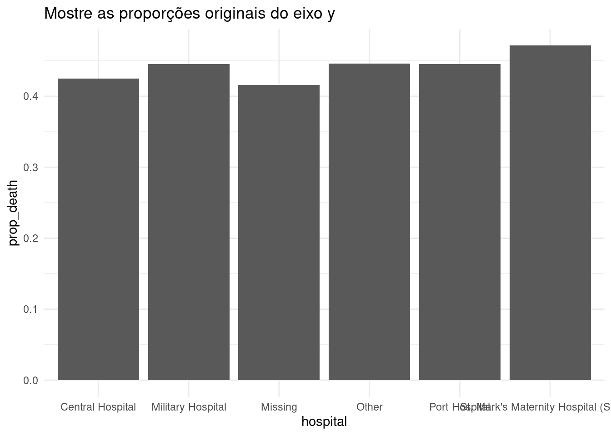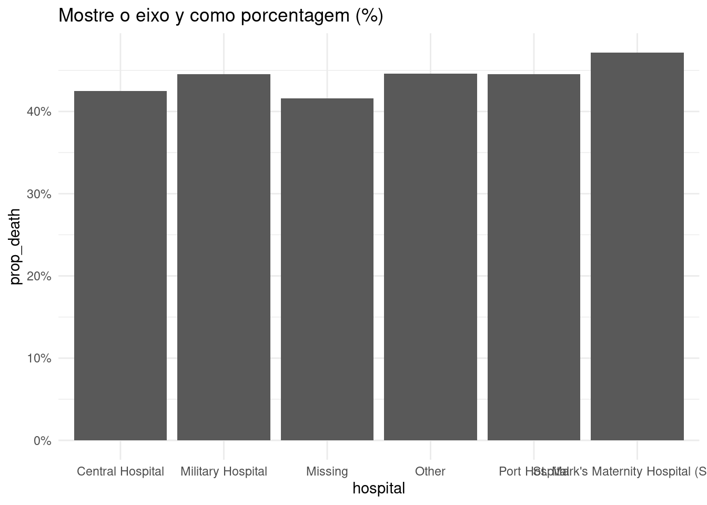
Escala logarítmica
Para transformar um eixo contínuo em uma escala logarítmica, adicione trans = "log2" no comando da escala. Para os propósitos deste exemplo, criamos um quadro de dados de regiões com seus respectivos preparedness_index e valores de casos acumulados.
plot_data <- data.frame(
region = c("A", "B", "C", "D", "E", "F", "G", "H", "I"),
preparedness_index = c(8.8, 7.5, 3.4, 3.6, 2.1, 7.9, 7.0, 5.6, 1.0),
cases_cumulative = c(15, 45, 80, 20, 21, 7, 51, 30, 1442)
)
plot_data## region preparedness_index cases_cumulative
## 1 A 8.8 15
## 2 B 7.5 45
## 3 C 3.4 80
## 4 D 3.6 20
## 5 E 2.1 21
## 6 F 7.9 7
## 7 G 7.0 51
## 8 H 5.6 30
## 9 I 1.0 1442Os casos acumulados para a região “I” são drasticamente maiores do que todas as outras regiões. Em circunstâncias como esta, você pode optar por mostrar o eixo y utilizando uma escala logarítmica, de forma que o leitor possa ver diferenças entre as regiões com menos casos acumulados.
# Eixo y original
preparedness_plot <- ggplot(data = plot_data,
mapping = aes(
x = preparedness_index,
y = cases_cumulative))+
geom_point(size = 2)+ # pontos para cada região
geom_text(
mapping = aes(label = region),
vjust = 1.5)+ # adicione os rótulos em texto
theme_minimal()
preparedness_plot # visualize o gráfico original
# visualize o eixo y transformado
preparedness_plot+ # inicie com o gráfico salvo acima
scale_y_continuous(trans = "log2") # adicione a transformação para o eixo y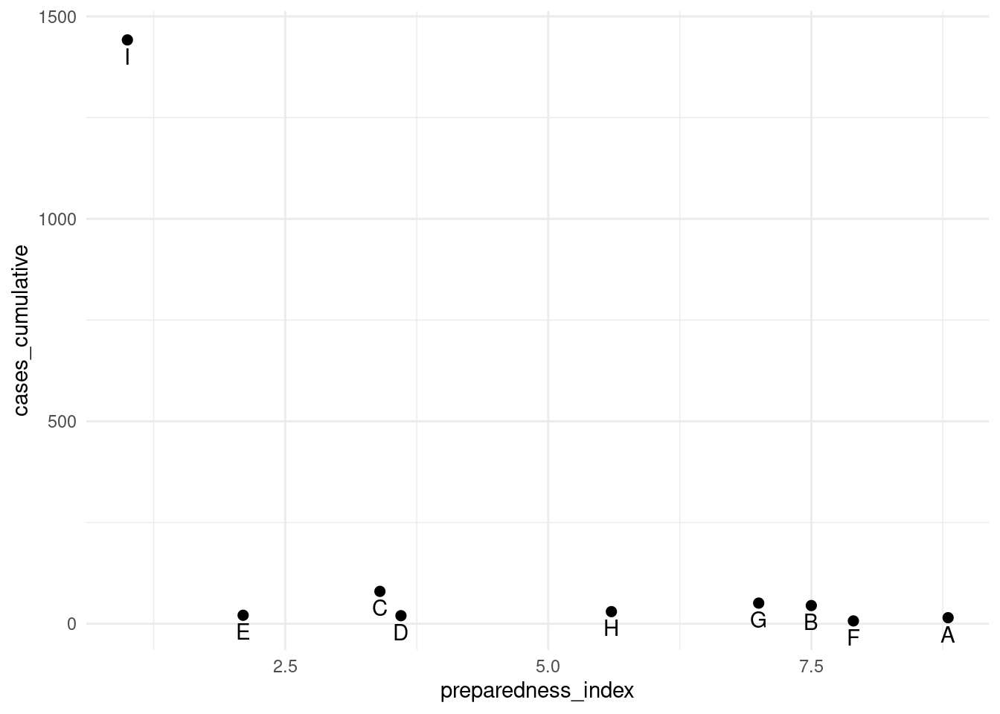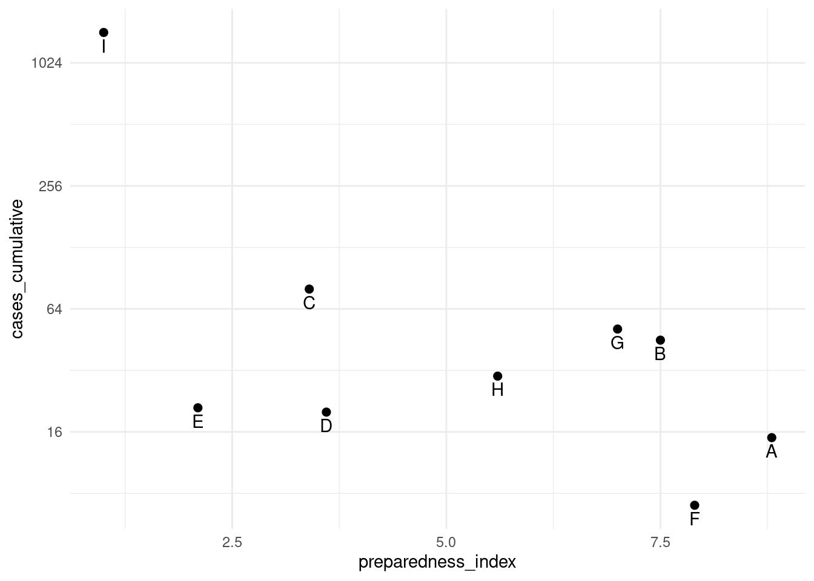
Escalas em gradiente
O preenchimento de escadas em gradiente de cores pode envolver detalhes adicionais. Normalmente, os ajustes padrões são bons, mas você pode querer ajustar os valores, limites de corte, etc.
Para demonstrar como ajustar uma escala contínua de cor, nós iremos utilizar um conjunto de dados da página [Rastreamento de contatos], que contém as idades dos casos e dos seus casos-fonte.
case_source_relationships <- rio::import(here::here("data", "godata", "relationships_clean.rds")) %>%
select(source_age, target_age) Abaixo, produzimos um arquivo “raster” de um gráfico de densidade de calor. Não iremos discorrer sobre como criar o gráfico (veja o link no parágrafo acima), mas sim como ajustar a escala de cor. Veja mais sobre a função stat_density2d() do ggplot2 aqui. Observe como a escala fill é contínua.
trans_matrix <- ggplot(
data = case_source_relationships,
mapping = aes(x = source_age, y = target_age))+
stat_density2d(
geom = "raster",
mapping = aes(fill = after_stat(density)),
contour = FALSE)+
theme_minimal()A seguir, mostramos algumas variações na escala de preenchimento:
trans_matrix
trans_matrix + scale_fill_viridis_c(option = "plasma") 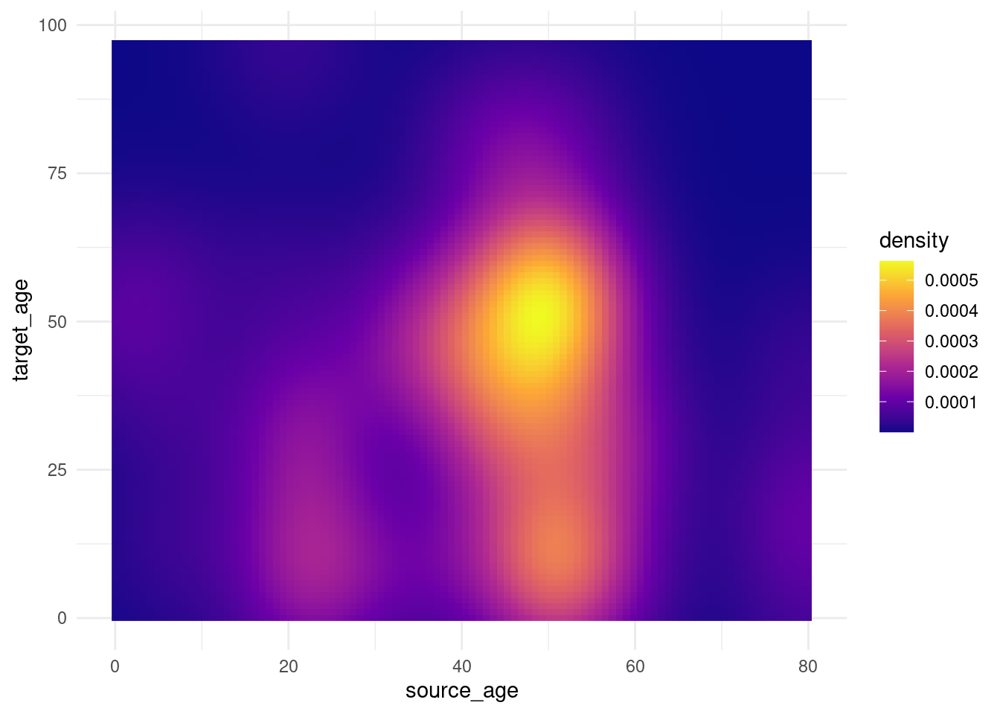
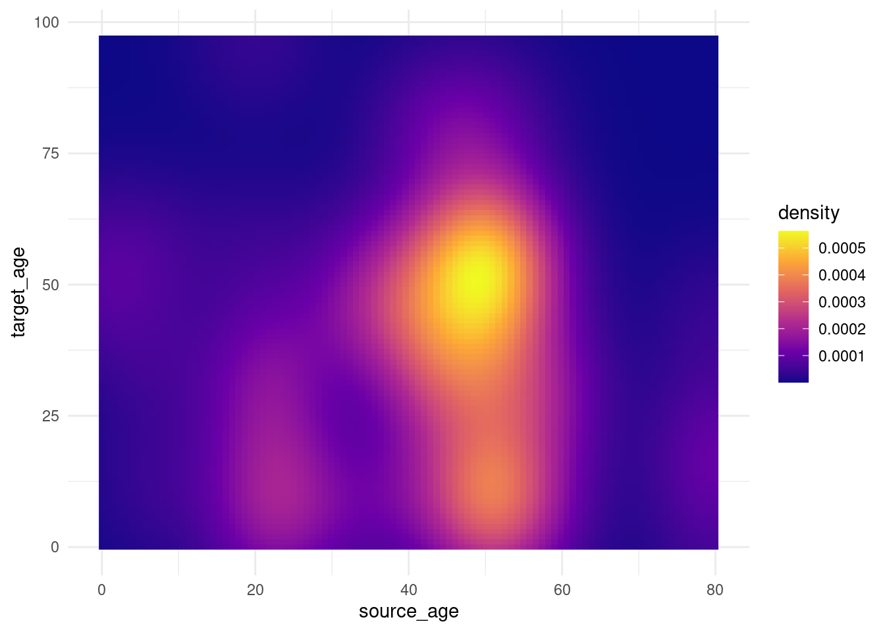
Agora veremos alguns exemplos de como ajustar os pontos de quebra da escala:
-
scale_fill_gradient()aceita duas cores (alta/baixa) -
scale_fill_gradientn()aceita um vetor com qualquer quantidade de cores paravalues =(valores intermediários serão intercalados)
- Use
scales::rescale()para ajustar como as cores serão posicionadas no decorrer do gradiente; ele reajusta o seu vetor de posições para ser entre 0 e 1.
trans_matrix +
scale_fill_gradient( # escala de gradiente com 2 cores
low = "aquamarine", # valor baixo
high = "purple", # valor alto
na.value = "grey", # valor para NA
name = "Densidade")+ # Título da legenda
labs(title = "Especifique manualmente as cores para valores altos/baixos")
# 3+ cores na escala
trans_matrix +
scale_fill_gradientn( # escala de 3-cores (baixo/médio/alto)
colors = c("blue", "yellow","red") # forneça cores no vetor
)+
labs(title = "Escala de 3 cores")
# Uso de rescale() para ajustar a posição de cores na escala
trans_matrix +
scale_fill_gradientn( # forneça qualquer número de cores
colors = c("blue", "yellow","red", "black"),
values = scales::rescale(c(0, 0.05, 0.07, 0.10, 0.15, 0.20, 0.3, 0.5)) # a posições para as cores é reescalado entre 0 e 1
)+
labs(title = "Cores não são posicionadas igualmente")
# uso de limites para os valores de corte que recebem a cor de preenchimento
trans_matrix +
scale_fill_gradientn(
colors = c("blue", "yellow","red"),
limits = c(0, 0.0002))+
labs(title = "Restrinja os limites dos valores, resultando em um espaço cinza")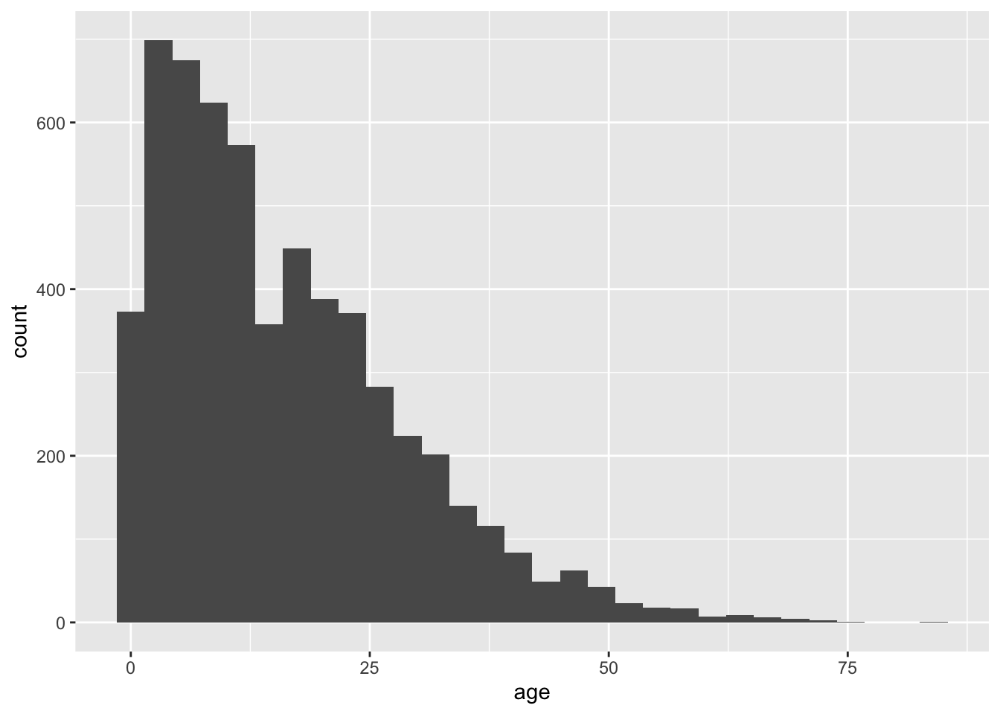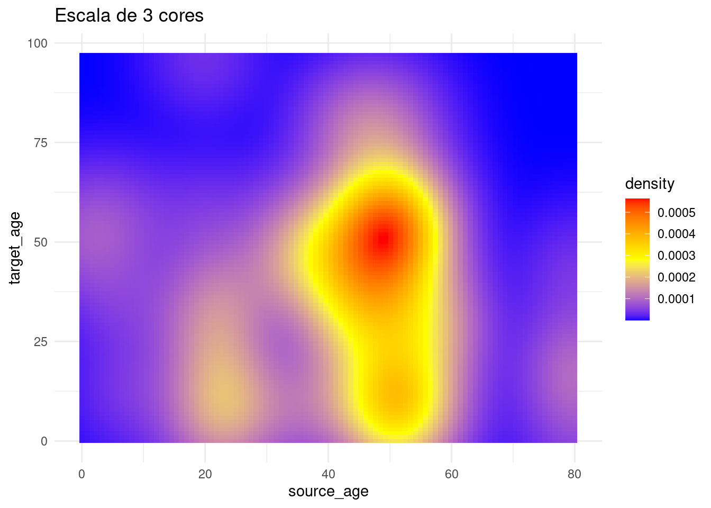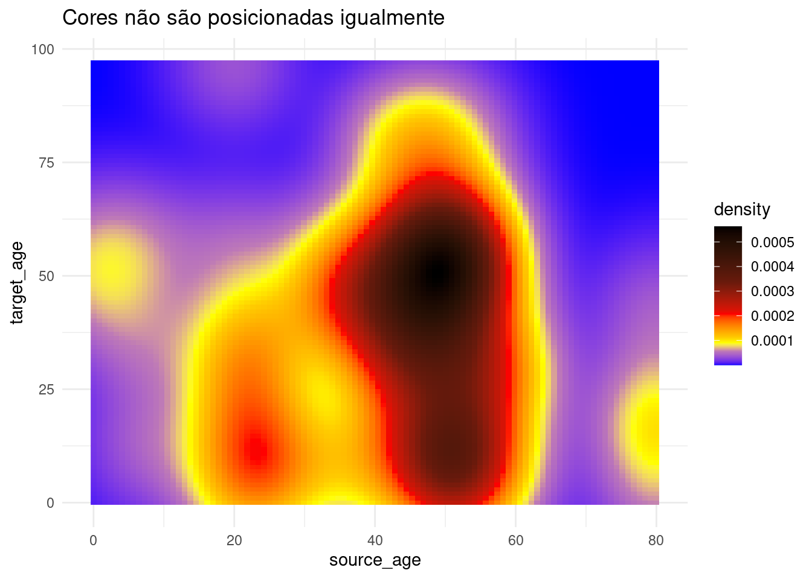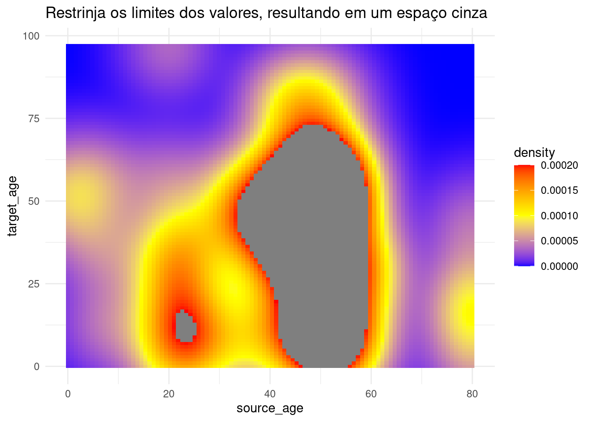
Paletas de cores
Colorbrewer e Viridis
Geralmente, se você quiser paletas pré-definidas, pode usar as funções scale_xxx_brewer ou scale_xxx_viridis_y.
As funções ‘brewer’ colorem a partir das paletas do colorbrewer.org.
As funções ‘viridis’ colorem das paletas viridis (amigável para deficientes visuais!), que “fornece mapas de cores que são uniformes, tanto nas cores quanto no preto-e-branco. Elas também foram desenhadas para serem percebidas por usuários com formas comuns de cegueiras de cor.” (leia mais aqui e aqui). Defina se a paleta é discreta, contínua, ou contida ao especificar isto no final da função (ex.: discreta é scale_xxx_viridis_d).
É recomendado que você teste as cores de seu gráfico neste simulador de cegueira de cor. Se você tiver um esquema de cores vermelho/verde, tente um esquema “quente-frio” (vermelho-azul) no lugar, como descrito aqui
Aqui é um exemplo da página [Básico do ggplot], utilizando diferentes esquemas de cores.
symp_plot <- linelist %>% # inicie com a linelist
select(c(case_id, fever, chills, cough, aches, vomit)) %>% # selecione as colunas
pivot_longer( # faça o pivoteamento longo
cols = -case_id,
names_to = "symptom_name",
values_to = "symptom_is_present") %>%
mutate( # substitua os campos em branco
symptom_is_present = replace_na(symptom_is_present, "unknown")) %>%
ggplot( # inicie o ggplot!
mapping = aes(x = symptom_name, fill = symptom_is_present))+
geom_bar(position = "fill", col = "black") +
theme_classic() +
theme(legend.position = "bottom")+
labs(
x = "Sintoma",
y = "Status do sintoma (proporção)"
)
symp_plot # visualize com as cores padrão
#################################
# visualize com cores especificadas manualmente
symp_plot +
scale_fill_manual(
values = c("yes" = "black", # defina as cores de forma explícita
"no" = "white",
"unknown" = "grey"),
breaks = c("yes", "no", "unknown"), # ordene os fatores corretamente
name = "" # configure a legenda para não ter título
)
#################################
# visualize com as cores discretas do pacote viridis
symp_plot +
scale_fill_viridis_d(
breaks = c("yes", "no", "unknown"),
name = ""
)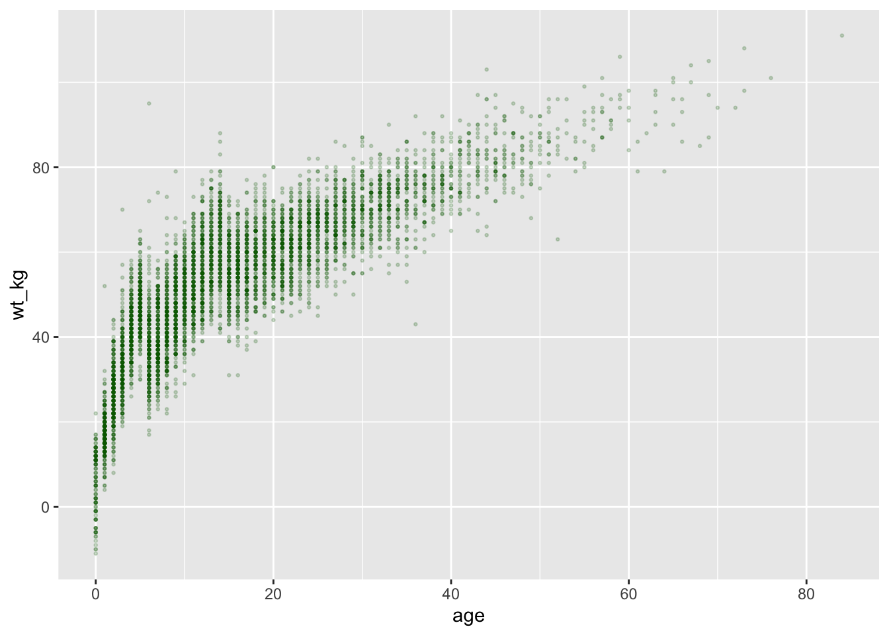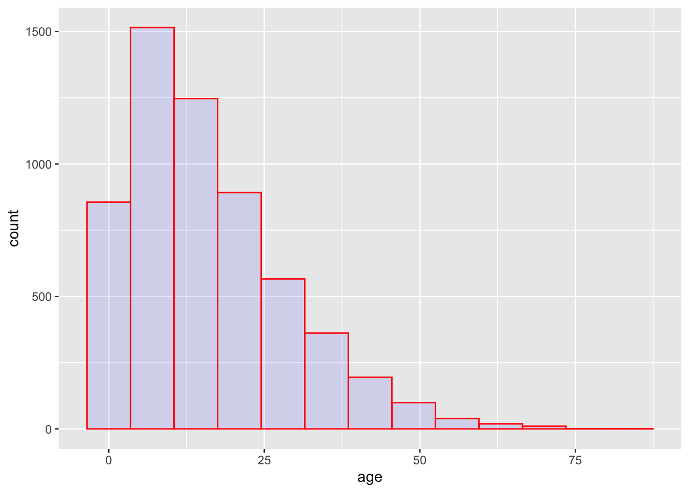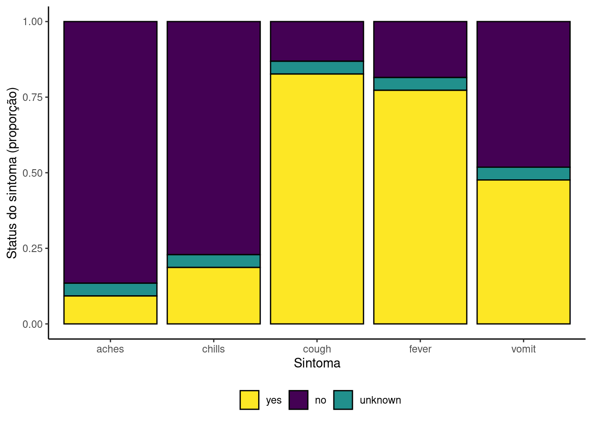
1.3 Altere a ordem das variáveis discretas
Geralmente, alterar a ordem em que as variáveis discretas aparecem no gráfico é difícil de entender para novatos no ggplot2. Entretanto, ao compreender o mecanismo que o ggplot2 usa para trabalhar com variáveis discretas, fica mais fácil de entender como alterar. No geral, se uma variável discreta é utilizada, ela é automaticamente convertida para a classe factor- que, por padrão, ordena os factors por ordem alfabética. Para trabalhar com isso, você simplesmente precisa reordenar os níveis de factor para refletirem na ordem que você gostaria que eles aparecessem no gráfico. Para informações mais detalhadas sobre como reordenar objetos da classe factor, veja a seção sobre factor neste guia.
Nós podemos utilizar um exemplo comum com grupos de idade - por padrão, o grupo de 5-9 anos será colocado no meio dos grupos ordenados (considerando a ordem alfanumérica), mas nós podemos movê-lo para atrás do grupo de 0-4 anos do gráfico ao renivelar os factors.
ggplot(
data = linelist %>% drop_na(age_cat5), # remova as linhas em que age_cat5 está ausente
mapping = aes(x = fct_relevel(age_cat5, "5-9", after = 1))) + # renivele os factors
geom_bar() +
labs(x = "Grupo de idade", y = "Número de hospitalizações",
title = "Quantidade total de hospitalizações por grupo de idade") +
theme_minimal()1.3.0.1 Pacote ggthemr
Adicionalmente, considere utilizar o pacote ggthemr, que pode ser baixado do Github utilizando essas instruções. Ele oferece paletas de cores muito agradáveis estéticamente, mas tenha ciência de que estas geralmente possuem um número máximo de valores, o que é um fator limitante caso você queira mais de 7 ou 8 cores.
1.4 Linhas de contorno
Gráficos de contorno são úteis quando você tem muitos pontos que podem se sobrepor (“overplotting”). Iremos utilizar os dados sobre as fontes dos casos utilizados acima para fazer um gráfico, mas de forma mais simples utilizando stat_density2d() e stat_density2d_filled() para produzir níveis discretos de contorno - como um mapa topográfico. Veja mais sobre as estatísticas utilizadas aqui.
case_source_relationships %>%
ggplot(aes(x = source_age, y = target_age))+
stat_density2d()+
geom_point()+
theme_minimal()+
labs(title = "stat_density2d() + geom_point()")
case_source_relationships %>%
ggplot(aes(x = source_age, y = target_age))+
stat_density2d_filled()+
theme_minimal()+
labs(title = "stat_density2d_filled()") 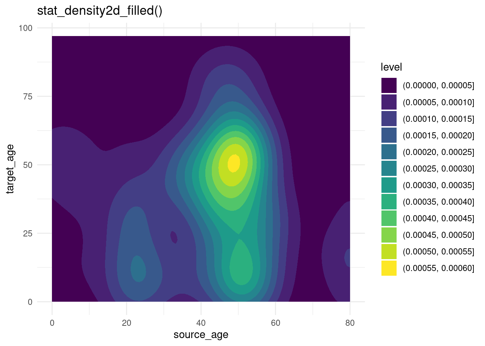
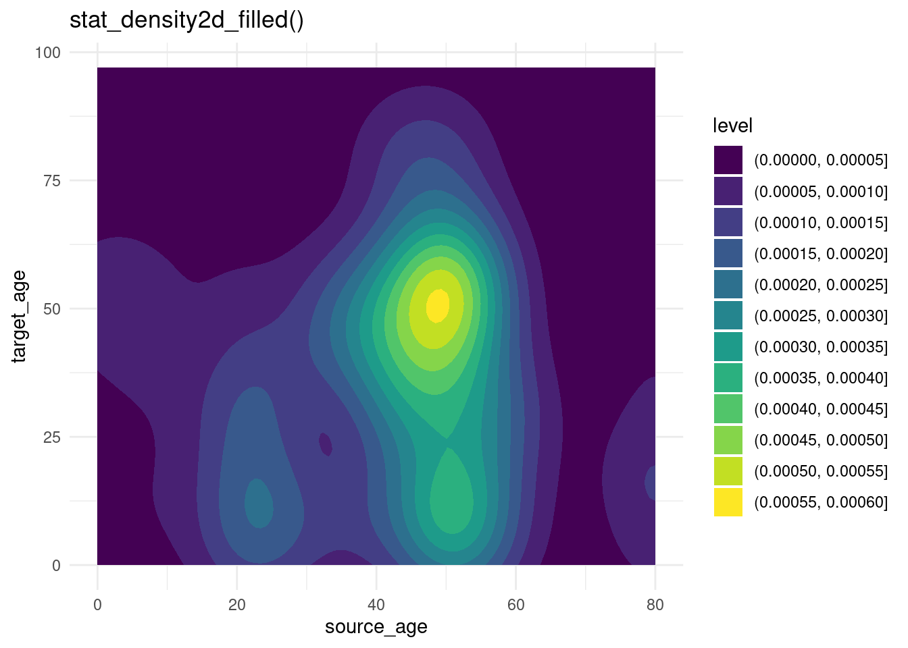
1.5 Distribuições marginais
Para mostrar as distribuições nas extremidades de um gráfico de dispersão criado com geom_point(), você pode utilizar o pacote ggExtra e sua função ggMarginal(). Salve seu ggplot original como um objeto, e então o utilize com ggMarginal(), como mostrado abaixo. Aqui estão os argumentos chave:
- Você precisa especificar
type =como “histogram”, “density” “boxplot”, “violin”, ou “densigram”.
- Por padrão, gráficos de dispersão marginal irão aparecer para ambos eixos. Você pode ajustar
margins =para “x” ou “y” se quiser apenas um deles. - Outros argumentos opcionais incluem
fill =(cor da barra),color =(cor da linha),size =(tamanho do gráfico relativo ao tamanho da margem, de forma que números maiores criam um gráfico de dispersão marginal menor).
- Você pode fornecer outros argumentos específicos para os eixos em
xparams =eyparams =. Por exemplo, para obter diferentes tamanhos dos containers do histograma, como mostrado abaixo.
Os gráficos de dispersão marginal podem refletir os grupos (colunas que foram atribuídas a color = no seu mapa estético do ggplot()). Se este for o caso, ajuste os argumentos groupColour = ou groupFill =, do ggMarginal(), para TRUE, como mostrado abaixo.
Leia mais neste resumo, na galeria de gráficos em R ou a documentação da função no R, com ?ggMarginal.
# Instale/carregue o pacote ggExtra
pacman::p_load(ggExtra)
# Gráfico básico de distribuição de peso e idade
scatter_plot <- ggplot(data = linelist)+
geom_point(mapping = aes(y = wt_kg, x = age)) +
labs(title = "Gráfico de distribuição de peso e idade")Para adicionar histogramas marginais, utilize type = "histogram". Opcionalmente, você pode ajustar groupFill = TRUE para obter histogramas empilhados.
# com histogramas
ggMarginal(
scatter_plot, # adicione histogramas marginais
type = "histogram", # especifique histogram
fill = "lightblue", # preenchimento das barras
xparams = list(binwidth = 10), # outros parâmetros para a dispersão marginal do eixo x
yparams = list(binwidth = 5)) # outros parâmetros para a dispersão marginal do eixo yGráfico de densidade marginal com valores agrupados/coloridos:
# Gráfico de dispersão, colorido de acordo com o desfecho clínico (outcome) do paciente
# Coluna de desfecho é atribuída como cor no ggplot. groupFill no ggMarginal ajustado para TRUE
scatter_plot_color <- ggplot(data = linelist %>% drop_na(gender))+
geom_point(mapping = aes(y = wt_kg, x = age, color = gender)) +
labs(title = "Gráfico de dispersão por peso e idade")+
theme(legend.position = "bottom")
ggMarginal(scatter_plot_color, type = "density", groupFill = TRUE)
Coloque o argumento size = para ajustar o tamanho relativo do gráfico de dispersão marginal. Números menores criam gráficos de dispersão marginal maiores. Você também ajusta color =. A seguir, um diagrama de caixa (boxplot) marginal, com a demonstração do argumento margins =, de forma que apareça apenas em um eixo:
# com boxplot
ggMarginal(
scatter_plot,
margins = "x", # mostre apenas o gráfico de dispersão marginal do eixo x
type = "boxplot") 
1.6 Rotulagem inteligente
No ggplot2, também é possível adicionar texto aos gráficos. Entretanto, a limitação disto é a sobreposição dos rótulos de texto com os dados no gráfico, ficando com aparência confusa e difícil de interpretar. Não existe forma ideal de lidar com issso no pacote básico, mas existe um complemento do ggplot2, chamado de ggrepel, que lida com isso de forma bem simples!
O pacote ggrepel fornece duas novas funções, geom_label_repel() e geom_text_repel(), que substituem geom_label() e geom_text(). Simplesmente utilize estas funções, em vez das originais do ggplot2, para produzir rótulos claros e bonitos. Dentro da função, mapeie a estética aes() como sempre, mas inclua o argumento label =, onde você fornece a coluna com os valores que quer mostrar (ex.: id do paciente, ou nome, etc). Você pode criar mais rótulos complexos ao combinar colunas e linhas novas (\n) dentro de str_glue(), como mostrado abaixo.
Algumas dicas:
- Use
min.segment.length = 0para sempre desenhar segmentos de linhas, oumin.segment.length = Infpara nunca desenhá-los - Use
size =fora deaes()para ajustar o tamanho do texto - Use
force =para mudar o grau de repulsão entre os rótulos e seus respectivos pontos (padrão é 1) - Inclua
fill =dentro deaes()para ter os rótulos coloridos de acordo com os valores- A letra “a” pode aparecer na legenda - adicione
guides(fill = guide_legend(override.aes = aes(color = NA)))+para removê-la
- A letra “a” pode aparecer na legenda - adicione
Veja esse detalhado tutorial para mais detalhes.
pacman::p_load(ggrepel)
linelist %>% # comece com a linelist
group_by(hospital) %>% # agrupe por hospital
summarise( # crie um novo conjunto de dados com o resumo dos valores por hospital
n_cases = n(), # número de casos por hospital
delay_mean = round(mean(days_onset_hosp, na.rm=T),1), # demora média por hospital
) %>%
ggplot(mapping = aes(x = n_cases, y = delay_mean))+ # envie o quadro de dados para o ggplot
geom_point(size = 2)+ # adicione os pontos
geom_label_repel( # adicione os rótulos dos pontos
mapping = aes(
label = stringr::str_glue(
"{hospital}\n{n_cases} casos, {delay_mean} dias") # como o rótulo é mostrado
),
size = 3, # tamanho do texto nos rótulos
min.segment.length = 0)+ # mostre todos os segmentos de linhas
labs( # adicione os rótulos dos eixos
title = "Tempo médio de espera para admissão, por hospital",
x = "Número de casos",
y = "Tempo médio de espera (dias)")Você pode rotular apenas um subconjunto dos dados - ao utilizar a sintaxe padrão do ggplot() para fornecer diferentes data = para cada camada geom do gráfico. Abaixo, todos os casos são colocados no gráfico, mas apenas alguns são rotulados.
ggplot()+
# Todos os pontos em cinza
geom_point(
data = linelist, # todos os dados fornecidos para essa camada
mapping = aes(x = ht_cm, y = wt_kg),
color = "grey",
alpha = 0.5)+ # cinza e semi-transparente
# Poucos pontos em preto
geom_point(
data = linelist %>% filter(days_onset_hosp > 15), # dados filtrados nesta camada
mapping = aes(x = ht_cm, y = wt_kg),
alpha = 1)+ # padrão preto e não transparente
# rótulos de pontos para alguns pontos
geom_label_repel(
data = linelist %>% filter(days_onset_hosp > 15), # filtre os dados para os rótulos
mapping = aes(
x = ht_cm,
y = wt_kg,
fill = outcome, # cor dos rótulos por desfecho
label = stringr::str_glue("Demora: {days_onset_hosp}d")), # rótulo criado com str_glue()
min.segment.length = 0) + # mostre os segmentos de linha para todos
# remova a letra "a" de dentro das caixas de legenda
guides(fill = guide_legend(override.aes = aes(color = NA)))+
# rótulos dos eixos
labs(
title = "Casos com longa demora até admissão",
y = "peso (kg)",
x = "altura (cm)")1.7 Eixos de tempo
Trabalhar com eixos de tempo no ggplot pode ser cansativo, mas é mais fácil com algumas funções chave. Lembre que, ao trabalhar com tempo ou datas, você deve garantir que as variáveis corretas estejam formatadas como das classes date ou datetime - veja a página [Trabalhando com datas] para mais informações, ou a página [Curvas epidêmicas], na seção sobre o ggplot, para exemplos.
O conjunto de funções mais útil para trabalhar com datas no ggplot2 são as funções de escala (scale_x_date(), scale_x_datetime(), e os seus cognatos do eixo y). Estas funções permitem definir a frequência dos rótulos dos eixos, e como formatar esses rótulos. Para descobrir como formatar datas, veja a seção working with dates novamente! Você pode utilizar os argumentos date_breaks e date_labels para especificar como as datas devem aparecer:
date_breakspermite especificar a frequência das quebras dos eixos - você pode utilizar uma string (ex.:"3 months", ou “2 days")date_labelspermite definir o formato das datas mostradas. Você pode utilizar uma string de formatação de datas (ex.:"%b-%d-%Y"):
# crie uma epicurva por data de início dos sintomas, quando disponível
ggplot(linelist, aes(x = date_onset)) +
geom_histogram(binwidth = 7) +
scale_x_date(
# 1 quebra a cada mês
date_breaks = "1 months",
# rótulos devem mostrar o mês, então a data
date_labels = "%b %d"
) +
theme_classic()1.8 Destacando
Destacar elementos específicos em um gráfico é uma forma útil de chamar a atenção para algo nos dados, enquanto também fornece informação na distribuição dos dados no conjunto inteiro. Embora isto não seja feito de forma fácil no ggplot2 básico, existe um pacote externo que pode ajudar nisso, conhecido como gghighlight. Ele é fácil de usar dentro da sintaxe do ggplot.
O pacote gghighlight utiliza a função gghighlight() para realizar os destaques. Para usar esta função, forneça um argumento lógico - o que pode ter muitos desfechos, mas iremos mostrar um exemplo da distribuição de idade dos casos em nosso linelist, ao destacar pelo desfecho clínico.
# carregue o pacote gghighlight
library(gghighlight)
# substitua os valores NA por "unknown" na variável de desfecho
linelist <- linelist %>%
mutate(outcome = replace_na(outcome, "Unknown"))
# produza um histograma de todos os casos de acordo com a idade
ggplot(
data = linelist,
mapping = aes(x = age_years, fill = outcome)) +
geom_histogram() +
gghighlight::gghighlight(outcome == "Death") # destaque as situações onde o desfecho do paciente foi óbito.Isto também funciona bem com as funções de facetas - ele permite a produção de gráficos facetados com os dados no fundo em destaque, mas que não se aplica à faceta! Abaixo, nós contamos os casos por semana e criamos uma curva epidêmica por hospital (color = e facet_wrap() ajustado para a coluna hospital).
# produz um histograma de todos os casos por idade
linelist %>%
count(week = lubridate::floor_date(date_hospitalisation, "week"),
hospital) %>%
ggplot()+
geom_line(aes(x = week, y = n, color = hospital))+
theme_minimal()+
gghighlight::gghighlight() + # destaque as situações em que o paciente morreu
facet_wrap(~hospital) # crie facetas de acordo com o desfecho
1.9 Criando gráficos de múltiplos conjuntos de dados
Observe que alinhar adequadamente os eixos para criar gráficos de conjuntos de dados múltilos no mesmo gráfico pode ser difícil. Considere uma das seguintes estratégias:
- Una os dados antes de criar o gráfico, e então converta para o formato “longo” com uma coluna associando os dados
- Use cowplot ou um pacote similar para combinar dois gráficos (veja abaixo)
1.10 Combine os gráficos
Dois pacotes bem úteis para combinar gráficos são o cowplot e o patchwork. Nesta página, iremos focar no cowplot, e, ocasionalmente, usaremos o patchwork.
Aqui está uma introdução ao cowplot. Você pode ler a documentação mais extensa para cada função aqui. Nós iremos mostrar alguns dos casos de uso e funções mais comuns a seguir.
O pacote cowplot funciona em tandem com ggplot2 - essencialmente, você o utiliza para organizar e combinar ggplots e suas legendas em figuras compostas. Este pacote também aceita gráficos do R base.
pacman::p_load(
tidyverse, # manipulação e visualização de dados
cowplot, # combine os gráficos
patchwork # combine os gráficos
)Enquanto facetear (descrito na página [Básico do ggplot]) é uma abordagem conveniente para criar gráficos, as vezes não é possível obter os resultados desejados com essa abordagem. Aqui, você pode escolher combinar os gráficos ao uni-los em um gráfico maior. Existem três pacotes bem conhecidos, que são ótimos para isso - cowplot, gridExtra, e patchwork. Entretanto, estes pacotes fazem basicamente a mesma coisa, de forma que iremos focar no cowplot nesta seção.
plot_grid()
O pacote cowplot tem uma grande variedade de funções, mas o uso mais fácil dele é com plot_grid(). Isto é, efetivamente, uma forma de organizar gráficos pré-definidos em forma de uma rede. Nós podemos aplicar em outro exemplo com os dados de malária - aqui nós fizemos um gráfico com o total de casos por distrito, e também mostramos a curva epidêmica pelo tempo.
malaria_data <- rio::import(here::here("data", "malaria_facility_count_data.rds"))
# gráfico do total de casos por distrito
p1 <- ggplot(malaria_data, aes(x = District, y = malaria_tot)) +
geom_bar(stat = "identity") +
labs(
x = "Distrito",
y = "Número total de casos",
title = "Quantidade total de casos de malária por distrito"
) +
theme_minimal()
# curva epidêmica pelo tempo
p2 <- ggplot(malaria_data, aes(x = data_date, y = malaria_tot)) +
geom_col(width = 1) +
labs(
x = "Data de envio dos dados",
y = "número de casos"
) +
theme_minimal()
cowplot::plot_grid(p1, p2,
# 1 coluna e duas linhas - empilhadas uma sobre a outra
ncol = 1,
nrow = 2,
# gráfico de cima é 2/3 da altura do segundo
rel_heights = c(2, 3))Combine as legendas
Caso os seus gráficos tenham a mesma legenda, combina-las é relativamente fácil. Simplesmente use a abordagem acima do cowplot para combinar os gráficos, mas remova a legenda de um deles (de-duplique).
Caso seus gráficos tenham legendas diferentes, você precisa usar uma abordagem alternativa:
- Crie e salve seus gráficos sem as legendas utilizando
theme(legend.position = "none")
- Extraia as legendas de cada gráfico utilizando
get_legend(), como mostrado abaixo - mas extraia as legendas dos gráficos modificados para, na verdade, mostrar a legenda
- Combine as legendas em um painel de legendas
- Combine os gráficos e o painel de legendas
Para fins de demonstração, primeiro mostramos os dois gráficos separados, e, então organizados em uma grade com suas próprias legendas (feio e uso ineficiente de espaço):
p1 <- linelist %>%
mutate(hospital = recode(hospital, "St. Mark's Maternity Hospital (SMMH)" = "St. Marks")) %>%
count(hospital, outcome) %>%
ggplot()+
geom_col(mapping = aes(x = hospital, y = n, fill = outcome))+
scale_fill_brewer(type = "qual", palette = 4, na.value = "grey")+
coord_flip()+
theme_minimal()+
labs(title = "Casos por desfecho clínico")
p2 <- linelist %>%
mutate(hospital = recode(hospital, "St. Mark's Maternity Hospital (SMMH)" = "St. Marks")) %>%
count(hospital, age_cat) %>%
ggplot()+
geom_col(mapping = aes(x = hospital, y = n, fill = age_cat))+
scale_fill_brewer(type = "qual", palette = 1, na.value = "grey")+
coord_flip()+
theme_minimal()+
theme(axis.text.y = element_blank())+
labs(title = "Casos por idade")Aqui esta como os dois gráficos ficam quando combinados usando plot_grid(), mas sem combinar as suas legendas:

E agora nós mostramos como combinar as legendas. Essencialmente, o que fazemos é criar cada gráfico sem sua legenda (theme(legend.position = "none"), e então definimos cada legenda dos gráficos separadamente, usando a função get_legend() do cowplot. Quando extraimos a legenda do gráfico salvo, precisamos adicionar + a legenda de volta, incluindo o argumento de posição (“right”) e ajustes menores para alinhar as legendas e seus títulos. Então, combinamos as legendas verticalmente, e os dois gráficos com a nova legenda combinada. Voilà!
# Crie o gráfico 1 sem a legenda
p1 <- linelist %>%
mutate(hospital = recode(hospital, "St. Mark's Maternity Hospital (SMMH)" = "St. Marks")) %>%
count(hospital, outcome) %>%
ggplot()+
geom_col(mapping = aes(x = hospital, y = n, fill = outcome))+
scale_fill_brewer(type = "qual", palette = 4, na.value = "grey")+
coord_flip()+
theme_minimal()+
theme(legend.position = "none")+
labs(title = "Casos por desfecho clínico")
# Crie o gráfico 2 sem a legenda
p2 <- linelist %>%
mutate(hospital = recode(hospital, "St. Mark's Maternity Hospital (SMMH)" = "St. Marks")) %>%
count(hospital, age_cat) %>%
ggplot()+
geom_col(mapping = aes(x = hospital, y = n, fill = age_cat))+
scale_fill_brewer(type = "qual", palette = 1, na.value = "grey")+
coord_flip()+
theme_minimal()+
theme(
legend.position = "none",
axis.text.y = element_blank(),
axis.title.y = element_blank()
)+
labs(title = "Casos por idade")
# extraia a legenda do gráfico 1 (de gráfico1 + legenda)
leg_p1 <- cowplot::get_legend(p1 +
theme(legend.position = "right", # extraia a legenda vertical
legend.justification = c(0,0.5))+ # de forma que as legendas alinhem
labs(fill = "Desfecho")) # título da legenda
# extraia a legenda do gráfico 2 (de gráfico 2 + legend)
leg_p2 <- cowplot::get_legend(p2 +
theme(legend.position = "right", # extraia a legenda vertical
legend.justification = c(0,0.5))+ # de forma que as legendas alinhem
labs(fill = "Categoria de idade")) # título da legenda
# crie um gráfico em branco para alinhar a legenda
#blank_p <- patchwork::plot_spacer() + theme_void()
# crie um painel de legendas, pode ser um sobre o outro (ou utilize o espaçados comentado acima)
legends <- cowplot::plot_grid(leg_p1, leg_p2, nrow = 2, rel_heights = c(.3, .7))
# combine os dois gráficos e o painel de legendas criado
combined <- cowplot::plot_grid(p1, p2, legends, ncol = 3, rel_widths = c(.4, .4, .2))
combined # visualize o gráficoEsta solução foi apresentada neste post com pequenos ajustes para alinhar as legendas deste post.
DICA: Nota interessante - o “cow” no cowplot vem do nome do criador do pacote - Claus O. Wilke.
Inserção de gráficos
Você pode inserir um gráfico em outros utilizando cowplot. Aqui estão pontos para estar ciente:
- Defina o gráfico principal com
theme_half_open(), do cowplot; é recomendado colocar a legenda no topo ou na base do gráfico - Defina o gráfico a ser inserido. O melhor é usar um gráfico que não precise de legenda. Você pode remover os elementos de tema deste gráfico com
element_blank(), como mostrado abaixo. - Os combine ao aplicar a função
ggdraw()no gráfico principal, e então adicionandodraw_plot()no gráfico a ser inserido, e especificando as coordenadas (x e y da extremidade baixa a esquerda), altura e comprimento proporcionais ao tamanho do gráfico principal.
# Defina o gráfico principal
main_plot <- ggplot(data = linelist)+
geom_histogram(aes(x = date_onset, fill = hospital))+
scale_fill_brewer(type = "qual", palette = 1, na.value = "grey")+
theme_half_open()+
theme(legend.position = "bottom")+
labs(title = "Curva epidêmica e desfechos clínicos por hospital")
# Crie o gráfico a ser inserido
inset_plot <- linelist %>%
mutate(hospital = recode(hospital, "St. Mark's Maternity Hospital (SMMH)" = "St. Marks")) %>%
count(hospital, outcome) %>%
ggplot()+
geom_col(mapping = aes(x = hospital, y = n, fill = outcome))+
scale_fill_brewer(type = "qual", palette = 4, na.value = "grey")+
coord_flip()+
theme_minimal()+
theme(legend.position = "none",
axis.title.y = element_blank())+
labs(title = "Casos por desfecho")
# Combine o gráfico principal com o gráfico a ser inserido
cowplot::ggdraw(main_plot)+
draw_plot(inset_plot,
x = .6, y = .55, #x = .07, y = .65,
width = .4, height = .4)Esta técnica é melhor explicada nestes dois resumos:
1.11 Eixos duplos
Um segundo eixo y é, frequentemente, solicitado em um gráfico ggplot2. Embora existam fortes debates sobre a validade destes gráficos na comunidade de visualização de dados, em que geralmente não são recomendados, o seu chefe pode requisitá-los. Abaixo, apresentamos um método para obtê-los: utilizando o pacote cowplot para combinar dois gráficos separados.
Esta abordagem envolve criar dois gráficos distintos - um com um eixo y na esquerda, e outro com o eixo y na direita. Ambos utilizarão um específico theme_cowplot() e terão o mesmo eixo x. Então, em um terceiro comando, os dois gráficos serão alinhados e sobrepostos. As funcionalidades do cowplot, das quais esta é apenas uma delas, são descritas em detalhes neste site.
Para demonstrar esta técnica, iremos sobrepor uma curva epidêmica com uma linha de porcentagem semanal de pacientes que morreram. Nós usamos este exemplo pois o alinhamento de datas no eixo x é mais complexo do que, digamos, alinhar um gráfico de barras com outro gráfico. Algumas coisas a serem observadas:
- A epicurva e a linha são agregadas em semanas antes de criarmos os gráficos, e os
date_breaksedate_labelssão idênticos - nós fizemos isto de forma que os eixos x dos dois gráficos é o mesmo quando sobrepostos. - O eixo y é movido para o lado direito, no gráfico 2, com o argumento
position =descale_y_continuous().
- Ambos gráficos fazem uso do
theme_cowplot()
Note que existe outro exemplo dessa técnica na página [Curvas epidêmicas] - a sobreposição da incidência acumulada acima da epicurva.
Crie o primeiro gráfico
Este é, essencialmente, uma epicurva. Nós utilizamos geom_area() apenas para demonstrar o seu uso (área abaixo de uma linha, por padrão)
pacman::p_load(cowplot) # carregue/instale o cowplot
p1 <- linelist %>% # salve o gráfico como um objeto
count(
epiweek = lubridate::floor_date(date_onset, "week")) %>%
ggplot()+
geom_area(aes(x = epiweek, y = n), fill = "grey")+
scale_x_date(
date_breaks = "month",
date_labels = "%b")+
theme_cowplot()+
labs(
y = "Casos semanais"
)
p1 # veja o gráfico 
Crie o segundo gráfico
Crie o segundo gráfico mostrando uma linha com a porcentagem semanal de óbitos.
p2 <- linelist %>% # salve seu gráfico como um objeto
group_by(
epiweek = lubridate::floor_date(date_onset, "week")) %>%
summarise(
n = n(),
pct_death = 100*sum(outcome == "Death", na.rm=T) / n) %>%
ggplot(aes(x = epiweek, y = pct_death))+
geom_line()+
scale_x_date(
date_breaks = "month",
date_labels = "%b")+
scale_y_continuous(
position = "right")+
theme_cowplot()+
labs(
x = "Semana epidemiológica de aparecimento dos sintomas",
y = "Percentual semanal de mortes",
title = "Incidência semanal de casos e percentual de mortes"
)
p2 # veja o gráficoAgora alinhamos o gráfico usando a função align_plots(), especificando os alinhamentos horizontal e vertical (“hv”, poderia também ser “h”, “v”, “none”). Também especificamos o alinhamento de todos os eixos (“top”, “bottom”, “left”, e “right”) com “tblr”. O resultado é da classe list (2 elementos).
Então, desenhamos os dois gráficos juntos utilizando ggdraw() (do cowplot) e referenciando as outras duas partes do objeto aligned_plots.
aligned_plots <- cowplot::align_plots(p1, p2, align="hv", axis="tblr") # alinhe os dois gráficos e os salve como uma lista
aligned_plotted <- ggdraw(aligned_plots[[1]]) + draw_plot(aligned_plots[[2]]) # sobreponha os gráficos e salve o gráfico visualizado
aligned_plotted # visualize os gráficos sobrepostos
1.12 Pacotes para te ajudar
Existem ótimos pacotes do R desenhados especificamente para ajudar a navegar no ggplot2:
Aponte-e-clique no ggplot2 com equisse
“Este complemento permite que você explore seus dados de forma interativa, ao visualiza-los com o pacote ggplot2. Ele permite desenhar gráficos de barras, curvas, gráficos de dispersão, hsitogramas, boxplots e objetos sf, e, então, exportar o gráfico e gerar o código de geração do gráfico.”
Instale e então o execute o pacote por meio do menu do RStudio ou com esquisse::esquisser().
Veja a página do Github
1.13 Dicas diversas
Exibição dos números
Você pode desabilitar a notação científica ao executar este comando antes de criar o gráfico.
options(scipen=999)Ou aplicar number_format(), do pacote scales, para um valor ou coluna específica, como mostrado abaixo.
Use funções do pacote scales para facilmente ajustar como os números são mostrados. Isto pode ser aplicado para colunas em seus dados, mas aqui são mostrados em números individuais para fins de exemplo.
scales::number(6.2e5)## [1] "620 000"
scales::number(1506800.62, accuracy = 0.1,)## [1] "1 506 800.6"
scales::comma(1506800.62, accuracy = 0.01)## [1] "1,506,800.62"
scales::comma(1506800.62, accuracy = 0.01, big.mark = "." , decimal.mark = ",")## [1] "1.506.800,62"
scales::percent(0.1)## [1] "10%"
scales::dollar(56)## [1] "$56"
scales::scientific(100000)## [1] "1e+05"1.14 Recursos extras
Para inspiração, galeria de gráficos do ggplot
Recomendação de formas de apresentação de dados Centro Europeu de Prevenção e Controle de Doenças Recomendações para apresentação de dados de vigilância
Facetas e rotuladores Utilizando rotuladores para feixes de facetas Rotuladores
Ajustando a ordem com factors
fct_reorder
fct_inorder
Como reordenar um boxplot
Reordene uma variável no ggplot2
R para Ciência dos Dados - Factors
Legendas
Ajuste a ordem da legenda
Títulos Alinhamento do título
Rótulos
ggrepel
Colinhas Lindos gráficos com ggplot2